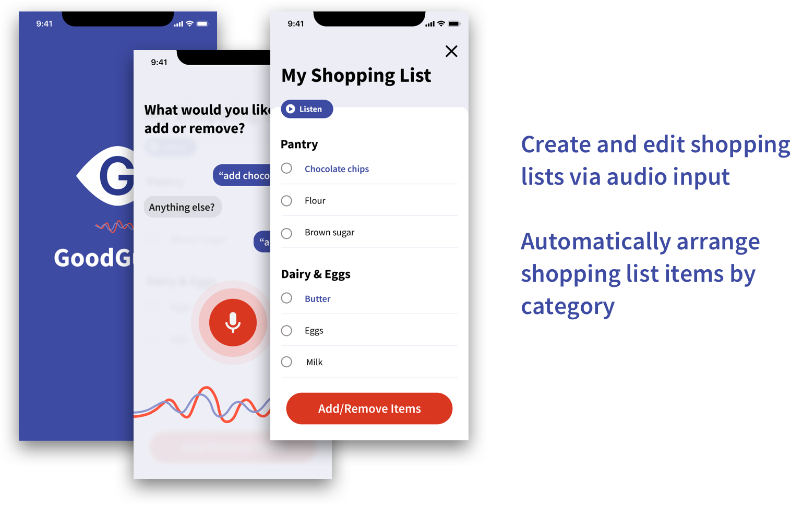
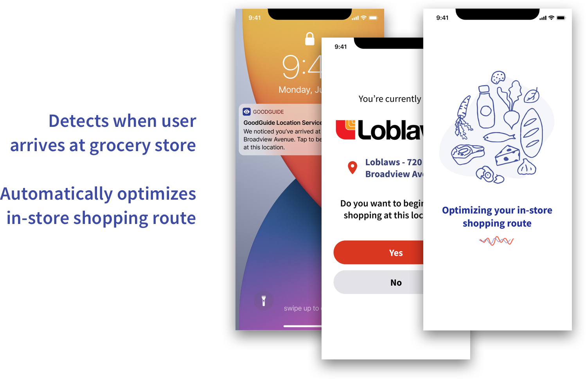
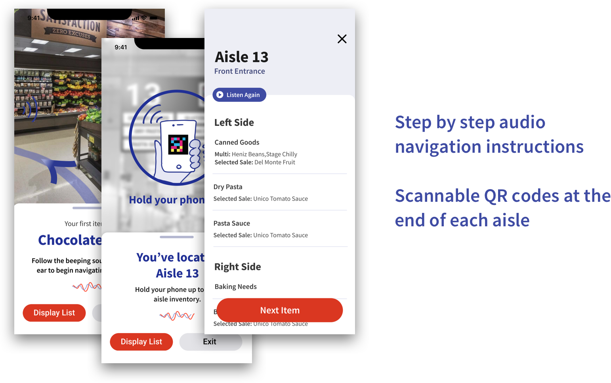
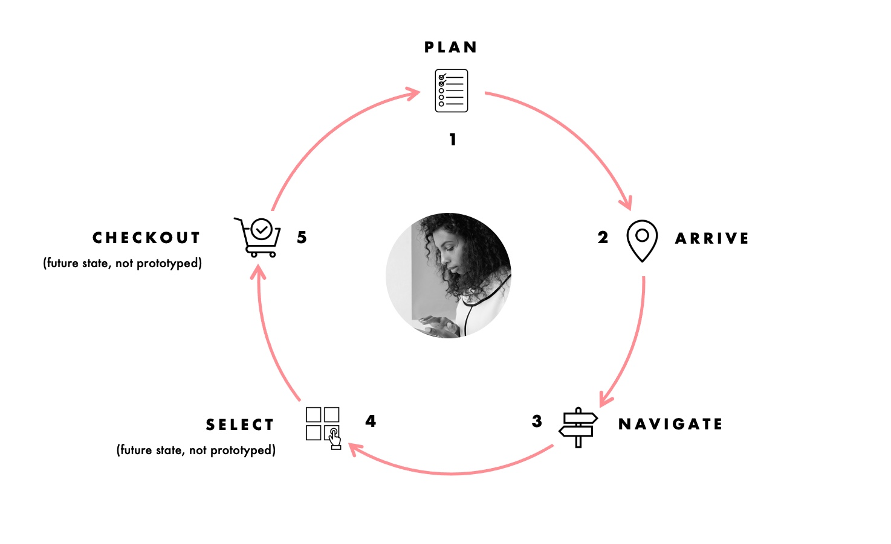

In my first 4 months at Publicis Sapient, I had the opportunity to participate in a company-wide global accessibility hackathon called enABLED Through Tech. enABLE aims to promote accessibility as a core principle of experience design, and encourages teams to instill this value in their day-to-day work for clients.
My team chose to focus on helping those with visual impairments navigate through essential daily activities, like shopping for groceries, where it can be especially difficult to do safely during COVID-19 times. We were one of 6 teams invited to pitch and present our prototype demo during the week of International Day of Disabled Persons (IDPD).
Designer
Sept 2020 - Dec 2020
Figma, MURAL, iMovie
Lauren Ip (me!), Fawzi Ammache, Joshua Kwok, Adriana Rodriguez
Around the world, 43 million people are considered legally blind, and hundreds of millions more are living with vision loss. With the brutal spread of COVID-19, life for those living with visual impairments is more challenging than ever before.
Restrictions placed on physical interactions and touch disrupt vital means of orientation. Daily tasks such as grocery shopping are increasingly difficult, and according to the Royal National Institute of Blind People, the proportion of visually impaired people relying on others to shop for them has more than doubled during the pandemic.
GoodGuide is a mobile navigation app that pairs a voice user interface with indoor mapping technology to guide visually impaired users throughout their in-store grocery shopping journey. Using bluetooth beacons placed around stores, GoodGuide generates an optimal shopping route based on a user’s grocery list, then directs users to each item on their list by giving audio cues. GoodGuide also allows users to scan QR codes placed around the store to hear information about products located within a specific aisle.
  I played a key part in prototyping our design in Figma, from low- to high-fidelity, and led the creation of a demo video to showcase how our solution would be used. I also acted as the main liason between our team and key stakeholders, including an accessibility expert and representative user.
Tyler is a musician and photographer based in Winnipeg, Manitoba. He is actively involved in the local community and is well known as DJ and owner of a popular downtown social club. Tragically, Tyler lost his vision over the course of 9 months and had to quickly adapt, learning how to navigate the world through sound and touch.
With the onset of COVID-19, Tyler's challenges multiplied. Previously difficult tasks such as grocery shopping are now even more burdensome, due to restrictions on physical interactions and limitations of current technology.
Photo by Brianne Jamieson.
→ Read Tyler's full story here.
We designed GoodGuide with Tyler and people like him in mind, to make their trips to the grocery store a little less daunting. We met with Tyler to understand his pain points and experiences coping with 9 months of gradual vision loss, and how it has affected his ability to grocery shop independently.
We had limited time to work on this hackathon (which we were juggling on top of our regular work commitments), so our design process was admittedly messy and rushed. But we did manage to run a pseudo-design sprint using a MURAL board, where we roughly documented our thought process throughout, including research questions/notes, persona development, opportunity areas, brainstorming and rough sketches.
Below is a storyline we pitched that follows Tyler on a typical weekly grocery shopping trip, and shows how GoodGuide can help him at each step of his journey.
Tyler would like to bake chocolate chip cookies this weekend, so he adds chocolate chips to his shopping list through the voice assistant, and GoodGuide automatically sorts his list by category.
“I’m planning on baking some cookies this weekend – I have to buy some chocolate chips and restock on butter. I’ll add that to my weekly shopping list and then I’ll be good to go.”
GoodGuide features:
Once Tyler arrives at the store, GoodGuide detects which shop he is at, and automatically optimizes his in-store shopping route based on this store’s layout to get all the items on his list.
“I hope the chocolate chips are where they usually are, sometimes they shift things around when there are promotions. It throws me off when items are out of their usual places.”
GoodGuide features:
Through in-app audio cues, GoodGuide offers Tyler step-by-step instructions and 360 degree audio pings to guide him towards his first item, chocolate chips, via bluetooth beacons placed throughout the store. Once Tyler reaches the aisle, he holds up his phone to scan a QR code. Goodguide reads out the list of items in that aisle. Great, the chocolate chips will be to his right.
“Thankfully the chocolate chips are in their usual aisle. Last time I was looking for almond slivers, and instead of being in the baking aisle, they were moved to the snacks and nuts aisle!”
GoodGuide features:
After picking up the chocolate chips, Tyler follows goodguide to the next item on his list, thinking ahead to the smell of the freshly baked cookies he’ll be enjoying on the weekend.
“I’m so glad I can immediately know where to go next. Sometimes I’m walking back and forth around the entire store looking for items that are actually near each other.”
GoodGuide features:
Proposed features:
Proposed features:
GoodGuide can help transform the way people living with visual impairment do their shopping. We had to ensure that it was easy for retailers to get on board:
GoodGuide was very positively received by our audience and judging panel. During the week of International Day of Persons with Disabilities, we had the opportunity to present our solution to nearly 100 event attendees worldwide, including our own Publicis Sapient CEO Nigel Vaz, as well as share our experience with our local office team in Toronto.
Out of 24 teams that participated in the hackathon, we took 3rd place (honourable mention)–despite being the most junior team to have made it to the finals!
View our pitch deck below or access it here:
→ Transcript of our pitch can be found here for accessibility.
View the video demo of our prototype in action below, or access it here (turn up your volume!):
I was so proud of our team for what we were able to accomplish in such a short amount of time, not just in how we placed, but what we learned throughout the process. My main goal going into the hackathon was to simply learn more about designing for accessibility–and that I did! Here's what I learned: